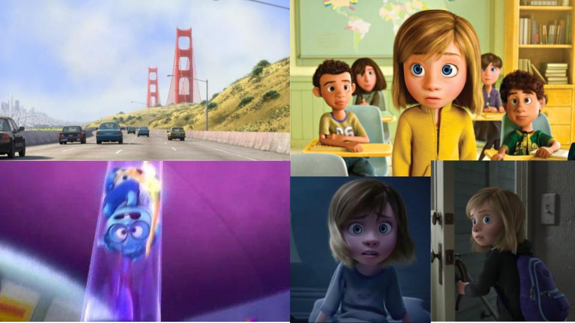
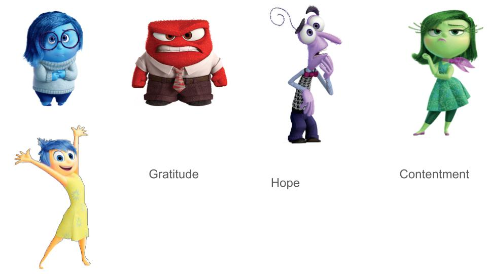

Pixar's "Inside Out" is Emotional Propaganda (4/8/2024)
Let us acknowledge that this is a movie targeted towards kids: Pixar’s Inside Out. In case you haven’t seen this movie allow me to give some background. The story follows a a young girl named Riley as we get to know her 5 emotions: Joy, Sadness, Anger, Fear, and Disgust. We learn how these emotions play a key role in developing not only the personality of our main character, but in how our main character chooses to make decisions. We find this to be true in every other character as well—mom, dad, friends, etc. The movie sets the premise that we are always controlled by some emotion, they just vary at degrees of strength given the situation our character is in. Here are the situations Riley gets into throughout the movie:
1. Their family just moved to SF because the Dad got a new job
2. Riley struggles to feel Joy as she misses her home
3. She then loses control of both her Joy AND Sadness, as her sadness tries to make an embarrassing moment a part of her personality
4. Having lost the power to feel joy and sadness, Riley gets controlled by her anger, fear, and disgust, leading her to make bad decisions (social isolation, talking back, etc.)
5. After a bad day and a nightmare, her leftover emotions decide it’s a good idea for her run away from home
We ALL have our bad days, and it very well could be possible that we lose access to tap into our joy every once in a while. I agree with this premise that we are always controlled by our emotions. However, I believe the more successful (evolving) people are better at choosing which emotions are necessary for any given situation. This movie does an ineffective job trying to teach us how to control our emotions, rather it is void of even attempting that, for there is an imbalance of our positive and negative ones. In fact, the main problem with this movie is it’s pushing of the idea that the only positivity in our life is entirely dependent on feeling joy.
Let’s separate each emotion by the energy they trigger in ourselves:
POSITIVE: Joy
NEGATIVE: Sadness, Anger, Fear, and Disgust
4 negative emotions against 1 positive emotion driving our decision making. What does this tell us? Indirectly, yet personified in the movie’s metaphors, it’s expressed that the probability of our decisions being negatively influenced is higher than the probability of our decisions being positive. WE SHOULD NOT THINK THAT because Life absolutely doesn’t work that way. If we wanted this movie to be perfect, our positive and negative emotions would have equal counterparts. Therefore, if we wanted to depict a young girl going through a crisis forcing her to runaway, it would be all 4 of her positive emotions losing control (or at least in a weakened state).
If I could sum it up, the original lesson they target is that “all our emotions are valid, therefore so are the reasons for our decisions.” At the resolution of the movie, it’s Riley’s sadness that brings her back, and her sadness that lets her parents empathize. THEN she can feel joy again. You know what I say to that? WRONG! Her sadness caused the rift in the first place, so how is sadness ALSO the solution? It isn’t! The solution was for Riley to finally be GRATEFUL and CONTENT for what she has, while being hopeful that things will get better. I’m not saying that our negative emotions have no place, considering the most effective uses for these are in our empathy with other people. It’s true that some people let their emotions run wild in how they dictate every action. Other people are able to acknowledge each emotion being triggered as they happen, empowering their ability to choose their reaction.
Now you may be wondering, why is Rusty even writing about this? Relax! It’s a movie for kids. That is my problem exactly. What is this movie indirectly teaching children? “We are more susceptible to our negative emotions, and that’s okay!” That isn’t okay. The lesson needed to be told is that we “have an equal amount of positive and negative emotions, and it’s more important to never let either of the two get the best of us.” An individual being overly-positive in a situation caused by catastrophic suffering could sometimes seem like a psychopath, in the same way that an individual being overly-negative on a perfect day would seem like a little bitch. I realize this movie is getting a sequel, Inside Out 2. I wanted to give the writers the benefit of the doubt to make up for this emotional propaganda when I heard they were adding new emotions. You’d probably guess I was disappointed to hear they added Embarrassment, Envy, Annoy, and Anxiety, all of which are negative; it makes one wonder how society can even attempt to be positive these days. The truth is that if we realized our emotions were actually balanced, being positive -- or dare I say "happy" -- really IS possible. I don’t understand why the writers at Pixar overlooked this issue, or if it was purposeful, but I digress. There is no standardized number for how many emotions a person can face, but we must believe that no matter how great, it is always balanced. Anyways, next time you watch this movie, turn that shit off.
Copyright © Russell. Made with HTML & CSS